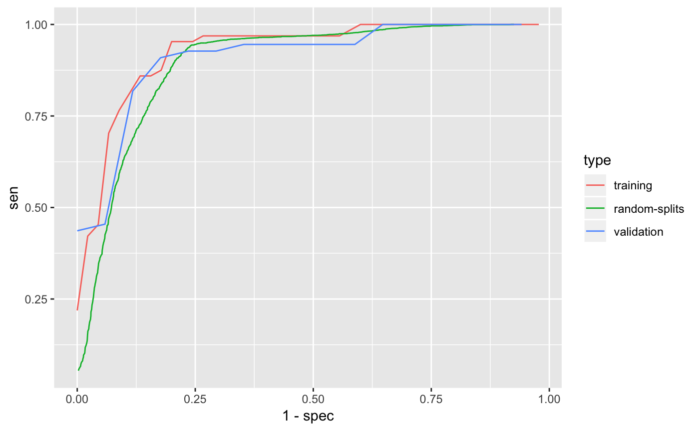

Load the EHR data from the PheCAP package.
## List of 7
## $ frame :'data.frame': 10000 obs. of 588 variables:
## ..$ label : num [1:10000] NA NA NA NA NA NA NA NA NA NA ...
## ..$ main_ICD : int [1:10000] 1 41 4 0 0 4 1 1 1 0 ...
## ..$ main_NLP : int [1:10000] 0 157 1 0 0 2 0 3 0 0 ...
## ..$ healthcare_utilization: int [1:10000] 25 187 138 67 9 4 477 182 7 71 ...
## ..$ COD1 : int [1:10000] 1 71 20 1 1 0 92 117 0 20 ...
## ..$ COD2 : int [1:10000] 1 31 11 1 0 0 80 9 1 6 ...
## ..$ COD3 : int [1:10000] 1 29 6 1 0 1 98 4 0 1 ...
## ..$ COD4 : int [1:10000] 1 2 0 0 0 0 10 0 0 0 ...
## ..$ COD5 : int [1:10000] 1 2 0 3 0 1 10 7 0 4 ...
## ..$ COD6 : int [1:10000] 1 11 13 6 0 0 22 26 0 9 ...
## ..$ COD7 : int [1:10000] 6 20 38 5 0 1 97 38 3 6 ...
## ..$ COD8 : int [1:10000] 0 9 21 1 0 0 0 25 1 0 ...
## ..$ COD9 : int [1:10000] 6 20 38 5 0 1 95 38 3 6 ...
## ..$ COD10 : int [1:10000] 1 10 0 1 0 0 64 12 0 9 ...
## ..$ NLP1 : int [1:10000] 1 10 0 1 0 0 64 12 0 9 ...
## ..$ NLP2 : int [1:10000] 0 0 7 3 0 0 12 1 0 0 ...
## ..$ NLP3 : int [1:10000] 0 12 0 1 0 0 176 4 0 13 ...
## ..$ NLP4 : int [1:10000] 0 82 34 10 0 2 178 104 1 30 ...
## ..$ NLP5 : int [1:10000] 0 160 38 38 0 2 485 148 1 45 ...
## ..$ NLP6 : int [1:10000] 0 82 17 5 0 1 176 4 0 18 ...
## ..$ NLP7 : int [1:10000] 0 1 0 0 2 0 0 0 0 0 ...
## ..$ NLP8 : int [1:10000] 1 34 3 0 0 0 213 44 0 0 ...
## ..$ NLP9 : int [1:10000] 0 53 21 32 1 1 29 14 1 6 ...
## ..$ NLP10 : int [1:10000] 5 72 44 9 4 0 2172 211 0 87 ...
## ..$ NLP11 : int [1:10000] 0 0 1 0 0 0 7 0 0 0 ...
## ..$ NLP12 : int [1:10000] 0 2 0 0 0 0 2 1 0 0 ...
## ..$ NLP13 : int [1:10000] 0 22 8 1 0 0 20 10 1 2 ...
## ..$ NLP14 : int [1:10000] 0 0 13 0 0 0 30 12 3 0 ...
## ..$ NLP15 : int [1:10000] 0 47 12 2 0 0 178 4 1 0 ...
## ..$ NLP16 : int [1:10000] 12 228 39 25 4 0 2838 353 5 58 ...
## ..$ NLP17 : int [1:10000] 1 12 3 0 0 0 55 6 1 9 ...
## ..$ NLP18 : int [1:10000] 8 21 5 1 0 0 93 20 2 26 ...
## ..$ NLP19 : int [1:10000] 6 121 59 72 3 4 255 39 7 38 ...
## ..$ NLP20 : int [1:10000] 6 122 65 61 2 2 252 38 3 30 ...
## ..$ NLP21 : int [1:10000] 0 0 0 0 0 0 14 1 0 0 ...
## ..$ NLP22 : int [1:10000] 6 130 66 9 4 0 264 235 0 28 ...
## ..$ NLP23 : int [1:10000] 0 33 0 2 0 0 101 1 3 0 ...
## ..$ NLP24 : int [1:10000] 0 4 5 1 0 1 18 2 0 4 ...
## ..$ NLP25 : int [1:10000] 0 10 0 0 0 1 27 1 4 0 ...
## ..$ NLP26 : int [1:10000] 5 127 58 31 0 2 280 282 2 27 ...
## ..$ NLP27 : int [1:10000] 0 4 3 0 0 0 0 1 1 0 ...
## ..$ NLP28 : int [1:10000] 7 19 11 3 0 1 42 6 2 7 ...
## ..$ NLP29 : int [1:10000] 0 12 1 0 0 1 38 1 0 11 ...
## ..$ NLP30 : int [1:10000] 0 11 8 2 0 0 7 0 0 0 ...
## ..$ NLP31 : int [1:10000] 7 15 7 10 4 1 0 16 0 20 ...
## ..$ NLP32 : int [1:10000] 0 3 1 0 0 0 7 0 0 0 ...
## ..$ NLP33 : int [1:10000] 0 1 0 0 0 0 11 22 0 0 ...
## ..$ NLP34 : int [1:10000] 6 6 7 1 0 0 218 12 0 3 ...
## ..$ NLP35 : int [1:10000] 7 24 13 1 0 0 346 17 0 11 ...
## ..$ NLP36 : int [1:10000] 11 94 18 15 0 0 148 28 0 28 ...
## ..$ NLP37 : int [1:10000] 7 4 1 1 0 0 21 5 0 6 ...
## ..$ NLP38 : int [1:10000] 7 4 1 1 0 0 21 5 0 6 ...
## ..$ NLP39 : int [1:10000] 11 73 15 6 0 0 61 10 0 19 ...
## ..$ NLP40 : int [1:10000] 2 35 24 4 0 1 49 10 0 13 ...
## ..$ NLP41 : int [1:10000] 0 9 1 1 0 0 20 1 0 1 ...
## ..$ NLP42 : int [1:10000] 0 32 7 1 1 1 5 9 0 3 ...
## ..$ NLP43 : int [1:10000] 1 27 2 3 0 2 41 2 2 1 ...
## ..$ NLP44 : int [1:10000] 0 20 4 0 0 0 97 22 0 1 ...
## ..$ NLP45 : int [1:10000] 0 14 1 0 0 1 72 9 0 1 ...
## ..$ NLP46 : int [1:10000] 0 23 2 0 0 1 89 11 0 1 ...
## ..$ NLP47 : int [1:10000] 2 19 1 12 0 0 45 3 0 3 ...
## ..$ NLP48 : int [1:10000] 0 2 3 1 0 0 21 7 0 0 ...
## ..$ NLP49 : int [1:10000] 0 21 2 1 0 0 100 19 0 0 ...
## ..$ NLP50 : int [1:10000] 0 5 0 0 0 1 25 1 0 1 ...
## ..$ NLP51 : int [1:10000] 0 29 1 0 0 0 150 25 1 0 ...
## ..$ NLP52 : int [1:10000] 0 7 10 11 0 0 39 13 0 0 ...
## ..$ NLP53 : int [1:10000] 0 7 10 11 0 0 39 13 0 0 ...
## ..$ NLP54 : int [1:10000] 2 5 10 2 0 1 117 24 1 0 ...
## ..$ NLP55 : int [1:10000] 4 54 61 38 0 0 138 49 8 5 ...
## ..$ NLP56 : int [1:10000] 0 30 1 8 0 3 39 30 2 0 ...
## ..$ NLP57 : int [1:10000] 0 13 0 1 0 0 0 3 0 0 ...
## ..$ NLP58 : int [1:10000] 0 6 0 13 0 0 0 1 0 0 ...
## ..$ NLP59 : int [1:10000] 2 17 46 3 0 0 75 19 0 10 ...
## ..$ NLP60 : int [1:10000] 0 19 13 9 1 0 95 33 0 22 ...
## ..$ NLP61 : int [1:10000] 0 5 0 4 0 0 0 3 0 0 ...
## ..$ NLP62 : int [1:10000] 15 62 62 53 4 0 333 87 2 59 ...
## ..$ NLP63 : int [1:10000] 0 24 0 0 0 0 8 3 0 0 ...
## ..$ NLP64 : int [1:10000] 2 2 2 1 0 0 26 8 0 1 ...
## ..$ NLP65 : int [1:10000] 5 0 13 1 2 0 40 15 0 0 ...
## ..$ NLP66 : int [1:10000] 0 11 2 20 0 0 9 2 2 0 ...
## ..$ NLP67 : int [1:10000] 1 4 0 0 0 0 9 0 3 1 ...
## ..$ NLP68 : int [1:10000] 2 27 9 24 4 0 177 24 2 10 ...
## ..$ NLP69 : int [1:10000] 14 12 5 13 0 0 518 2 6 19 ...
## ..$ NLP70 : int [1:10000] 14 12 5 13 0 0 518 2 6 19 ...
## ..$ NLP71 : int [1:10000] 3 16 29 31 0 0 72 10 9 1 ...
## ..$ NLP72 : int [1:10000] 0 6 3 13 0 0 28 2 0 0 ...
## ..$ NLP73 : int [1:10000] 8 2 1 0 0 0 22 1 0 4 ...
## ..$ NLP74 : int [1:10000] 0 6 14 22 0 0 38 20 12 0 ...
## ..$ NLP75 : int [1:10000] 0 14 3 9 0 0 13 8 0 7 ...
## ..$ NLP76 : int [1:10000] 1 0 0 0 0 1 0 2 0 1 ...
## ..$ NLP77 : int [1:10000] 1 5 0 0 0 0 1 1 0 1 ...
## ..$ NLP78 : int [1:10000] 2 1 0 0 1 1 0 2 0 1 ...
## ..$ NLP79 : int [1:10000] 0 2 0 11 0 0 18 5 0 6 ...
## ..$ NLP80 : int [1:10000] 1 8 20 3 0 0 32 4 5 0 ...
## ..$ NLP81 : int [1:10000] 0 0 1 0 0 0 12 5 0 3 ...
## ..$ NLP82 : int [1:10000] 0 7 0 0 0 0 16 2 0 0 ...
## ..$ NLP83 : int [1:10000] 4 22 5 5 0 0 252 68 0 5 ...
## ..$ NLP84 : int [1:10000] 2 7 14 1 1 1 33 12 1 2 ...
## ..$ NLP85 : int [1:10000] 0 2 0 0 0 0 2 0 0 0 ...
## .. [list output truncated]
## $ hu_feature : chr "healthcare_utilization"
## $ label : chr "label"
## $ patient_id :'data.frame': 10000 obs. of 0 variables
## $ training_set : int [1:109] 120 175 183 184 283 435 485 779 795 799 ...
## $ validation_set : int [1:72] 69 77 447 585 640 953 1129 1262 1299 1358 ...
## $ feature_transformation:function (x)
## - attr(*, "class")= chr "PhecapData"Specify the surrogate used for surrogate-assisted feature extraction (SAFE). The typical way is to specify a main ICD code, a main NLP CUI, as well as their combination. In some cases one may want to define surrogate through lab test. The default lower_cutoff is 1, and the default upper_cutoff is 10. Feel free to change the cutoffs based on domain knowledge.
surrogates <- list(
PhecapSurrogate(
variable_names = "main_ICD",
lower_cutoff = 1, upper_cutoff = 10),
PhecapSurrogate(
variable_names = "main_NLP",
lower_cutoff = 1, upper_cutoff = 10),
PhecapSurrogate(
variable_names = c("main_ICD", "main_NLP"),
lower_cutoff = 1, upper_cutoff = 10))Run surrogate-assisted feature extraction (SAFE) and show result.
## main_ICD main_NLP main_ICD&main_NLP
## NumCases 950 1505 1860
## NumControls 7237 7158 6138
## Using surrogate main_ICD
## Subsample 1/200
## Subsample 50/200
## Subsample 100/200
## Subsample 150/200
## Subsample 200/200
## Using surrogate main_NLP
## Subsample 1/200
## Subsample 50/200
## Subsample 100/200
## Subsample 150/200
## Subsample 200/200
## Using surrogate main_ICD&main_NLP
## Subsample 1/200
## Subsample 50/200
## Subsample 100/200
## Subsample 150/200
## Subsample 200/200## user system elapsed
## 77.563 1.134 78.788## 'PhecapFeatureExtraction' chr [1:9] "main_ICD" "main_NLP" "NLP56" ...
## - attr(*, "frequency")= Named num [1:587] 1 1 0 0.0133 0 ...
## ..- attr(*, "names")= chr [1:587] "main_ICD" "main_NLP" "healthcare_utilization" "COD1" ...Train phenotyping model and show the fitted model, with the AUC on the training set as well as random splits.
## Split 1/200
## Split 50/200
## Split 100/200
## Split 150/200
## Split 200/200## user system elapsed
## 2.445 0.014 2.464## List of 10
## $ coefficients : Named num [1:12] 1.63 0.38 1.34 0 -1.24 ...
## ..- attr(*, "names")= chr [1:12] "(Intercept)" "main_ICD" "main_NLP" "main_ICD&main_NLP" ...
## $ method : chr "lasso_bic"
## $ fit_function :function (x, y, penalty_weight = NULL, ...)
## ..- attr(*, "srcref")= 'srcref' int [1:8] 37 18 63 1 18 1 59 85
## .. ..- attr(*, "srcfile")=Classes 'srcfilealias', 'srcfile' <environment: 0x7fc2b5aa8190>
## $ predict_function:function (beta, x, ...)
## ..- attr(*, "srcref")= 'srcref' int [1:8] 66 19 72 1 19 1 88 94
## .. ..- attr(*, "srcfile")=Classes 'srcfilealias', 'srcfile' <environment: 0x7fc2b5aa8190>
## $ train_roc :'data.frame': 999 obs. of 14 variables:
## ..$ cut : num [1:999] 0.001 0.002 0.003 0.004 0.005 0.006 0.007 0.008 0.009 0.01 ...
## ..$ pct : num [1:999] 0.991 0.991 0.991 0.991 0.991 ...
## ..$ acc : num [1:999] 0.596 0.596 0.596 0.596 0.596 ...
## ..$ tpr : num [1:999] 0.00829 0.00829 0.00829 0.00829 0.00829 ...
## ..$ fpr : num [1:999] 0.978 0.978 0.978 0.978 0.978 ...
## ..$ tnr : num [1:999] 0.0222 0.0222 0.0222 0.0222 0.0222 ...
## ..$ ppv : num [1:999] 0.593 0.593 0.593 0.593 0.593 ...
## ..$ fdr : num [1:999] 0.407 0.407 0.407 0.407 0.407 ...
## ..$ npv : num [1:999] 1 1 1 1 1 1 1 1 1 1 ...
## ..$ sen : num [1:999] 1 1 1 1 1 1 1 1 1 1 ...
## ..$ spec: num [1:999] 0.0222 0.0222 0.0222 0.0222 0.0222 ...
## ..$ prec: num [1:999] 0.593 0.593 0.593 0.593 0.593 ...
## ..$ rec : num [1:999] 1 1 1 1 1 1 1 1 1 1 ...
## ..$ f1 : num [1:999] 0.372 0.372 0.372 0.372 0.372 ...
## $ train_auc : num 0.919
## $ split_roc :'data.frame': 999 obs. of 14 variables:
## ..$ cut : num [1:999] 0.001 0.002 0.003 0.004 0.005 ...
## ..$ pct : num [1:999] 0.969 0.968 0.967 0.966 0.965 ...
## ..$ acc : num [1:999] 0.611 0.612 0.613 0.613 0.615 ...
## ..$ tpr : num [1:999] 0.0235 0.0235 0.0235 0.0235 0.0235 ...
## ..$ fpr : num [1:999] 0.925 0.922 0.92 0.919 0.915 ...
## ..$ tnr : num [1:999] 0.0749 0.0779 0.08 0.0814 0.0852 ...
## ..$ ppv : num [1:999] 0.598 0.599 0.6 0.6 0.601 ...
## ..$ fdr : num [1:999] 0.402 0.401 0.4 0.4 0.399 ...
## ..$ npv : num [1:999] 1 1 1 0.999 0.999 ...
## ..$ sen : num [1:999] 1 1 1 1 1 ...
## ..$ spec: num [1:999] 0.0749 0.0779 0.08 0.0814 0.0852 ...
## ..$ prec: num [1:999] 0.598 0.599 0.6 0.6 0.601 ...
## ..$ rec : num [1:999] 1 1 1 1 1 ...
## ..$ f1 : num [1:999] 0.373 0.373 0.374 0.374 0.374 ...
## $ split_auc : num 0.905
## $ surrogates :List of 3
## ..$ :List of 3
## .. ..$ variable_names: chr "main_ICD"
## .. ..$ lower_cutoff : num 1
## .. ..$ upper_cutoff : num 10
## .. ..- attr(*, "class")= chr "PhecapSurrogate"
## ..$ :List of 3
## .. ..$ variable_names: chr "main_NLP"
## .. ..$ lower_cutoff : num 1
## .. ..$ upper_cutoff : num 10
## .. ..- attr(*, "class")= chr "PhecapSurrogate"
## ..$ :List of 3
## .. ..$ variable_names: chr [1:2] "main_ICD" "main_NLP"
## .. ..$ lower_cutoff : num 1
## .. ..$ upper_cutoff : num 10
## .. ..- attr(*, "class")= chr "PhecapSurrogate"
## $ feature_selected: 'PhecapFeatureExtraction' chr [1:9] "main_ICD" "main_NLP" "NLP56" "NLP93" ...
## ..- attr(*, "frequency")= Named num [1:587] 1 1 0 0.0133 0 ...
## .. ..- attr(*, "names")= chr [1:587] "main_ICD" "main_NLP" "healthcare_utilization" "COD1" ...
## - attr(*, "class")= chr "PhecapModel"Validate phenotyping model using validation label, and show the AUC and ROC
## List of 8
## $ coefficients: Named num [1:12] 1.63 0.38 1.34 0 -1.24 ...
## ..- attr(*, "names")= chr [1:12] "(Intercept)" "main_ICD" "main_NLP" "main_ICD&main_NLP" ...
## $ method : chr "lasso_bic"
## $ train_roc :'data.frame': 999 obs. of 14 variables:
## ..$ cut : num [1:999] 0.001 0.002 0.003 0.004 0.005 0.006 0.007 0.008 0.009 0.01 ...
## ..$ pct : num [1:999] 0.991 0.991 0.991 0.991 0.991 ...
## ..$ acc : num [1:999] 0.596 0.596 0.596 0.596 0.596 ...
## ..$ tpr : num [1:999] 0.00829 0.00829 0.00829 0.00829 0.00829 ...
## ..$ fpr : num [1:999] 0.978 0.978 0.978 0.978 0.978 ...
## ..$ tnr : num [1:999] 0.0222 0.0222 0.0222 0.0222 0.0222 ...
## ..$ ppv : num [1:999] 0.593 0.593 0.593 0.593 0.593 ...
## ..$ fdr : num [1:999] 0.407 0.407 0.407 0.407 0.407 ...
## ..$ npv : num [1:999] 1 1 1 1 1 1 1 1 1 1 ...
## ..$ sen : num [1:999] 1 1 1 1 1 1 1 1 1 1 ...
## ..$ spec: num [1:999] 0.0222 0.0222 0.0222 0.0222 0.0222 ...
## ..$ prec: num [1:999] 0.593 0.593 0.593 0.593 0.593 ...
## ..$ rec : num [1:999] 1 1 1 1 1 1 1 1 1 1 ...
## ..$ f1 : num [1:999] 0.372 0.372 0.372 0.372 0.372 ...
## $ train_auc : num 0.919
## $ split_roc :'data.frame': 999 obs. of 14 variables:
## ..$ cut : num [1:999] 0.001 0.002 0.003 0.004 0.005 ...
## ..$ pct : num [1:999] 0.969 0.968 0.967 0.966 0.965 ...
## ..$ acc : num [1:999] 0.611 0.612 0.613 0.613 0.615 ...
## ..$ tpr : num [1:999] 0.0235 0.0235 0.0235 0.0235 0.0235 ...
## ..$ fpr : num [1:999] 0.925 0.922 0.92 0.919 0.915 ...
## ..$ tnr : num [1:999] 0.0749 0.0779 0.08 0.0814 0.0852 ...
## ..$ ppv : num [1:999] 0.598 0.599 0.6 0.6 0.601 ...
## ..$ fdr : num [1:999] 0.402 0.401 0.4 0.4 0.399 ...
## ..$ npv : num [1:999] 1 1 1 0.999 0.999 ...
## ..$ sen : num [1:999] 1 1 1 1 1 ...
## ..$ spec: num [1:999] 0.0749 0.0779 0.08 0.0814 0.0852 ...
## ..$ prec: num [1:999] 0.598 0.599 0.6 0.6 0.601 ...
## ..$ rec : num [1:999] 1 1 1 1 1 ...
## ..$ f1 : num [1:999] 0.373 0.373 0.374 0.374 0.374 ...
## $ split_auc : num 0.905
## $ valid_roc :'data.frame': 999 obs. of 14 variables:
## ..$ cut : num [1:999] 0.001 0.002 0.003 0.004 0.005 0.006 0.007 0.008 0.009 0.01 ...
## ..$ pct : num [1:999] 0.986 0.986 0.986 0.986 0.986 ...
## ..$ acc : num [1:999] 0.778 0.778 0.778 0.778 0.778 ...
## ..$ tpr : num [1:999] 0.0119 0.0119 0.0119 0.0119 0.0119 ...
## ..$ fpr : num [1:999] 0.941 0.941 0.941 0.941 0.941 ...
## ..$ tnr : num [1:999] 0.0588 0.0588 0.0588 0.0588 0.0588 ...
## ..$ ppv : num [1:999] 0.775 0.775 0.775 0.775 0.775 ...
## ..$ fdr : num [1:999] 0.225 0.225 0.225 0.225 0.225 ...
## ..$ npv : num [1:999] 1 1 1 1 1 1 1 1 1 1 ...
## ..$ sen : num [1:999] 1 1 1 1 1 1 1 1 1 1 ...
## ..$ spec: num [1:999] 0.0588 0.0588 0.0588 0.0588 0.0588 ...
## ..$ prec: num [1:999] 0.775 0.775 0.775 0.775 0.775 ...
## ..$ rec : num [1:999] 1 1 1 1 1 1 1 1 1 1 ...
## ..$ f1 : num [1:999] 0.437 0.437 0.437 0.437 0.437 ...
## $ valid_auc : num 0.894
## - attr(*, "class")= chr "PhecapValidation"
Apply the model to all the patients to obtain predicted phenotype.
## 'data.frame': 10000 obs. of 1 variable:
## $ prediction: num 0.1054 0.9661 0.0504 0.0269 0.2279 ...